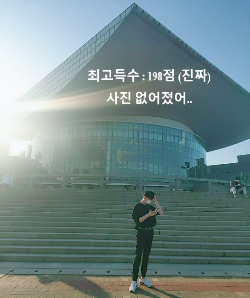
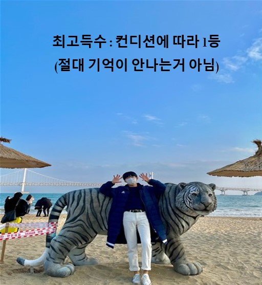
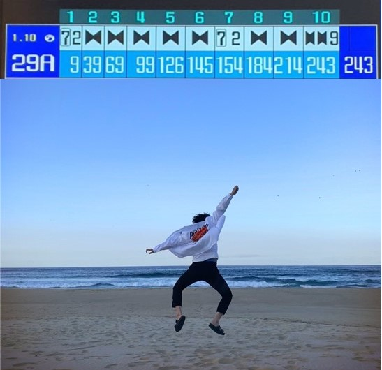
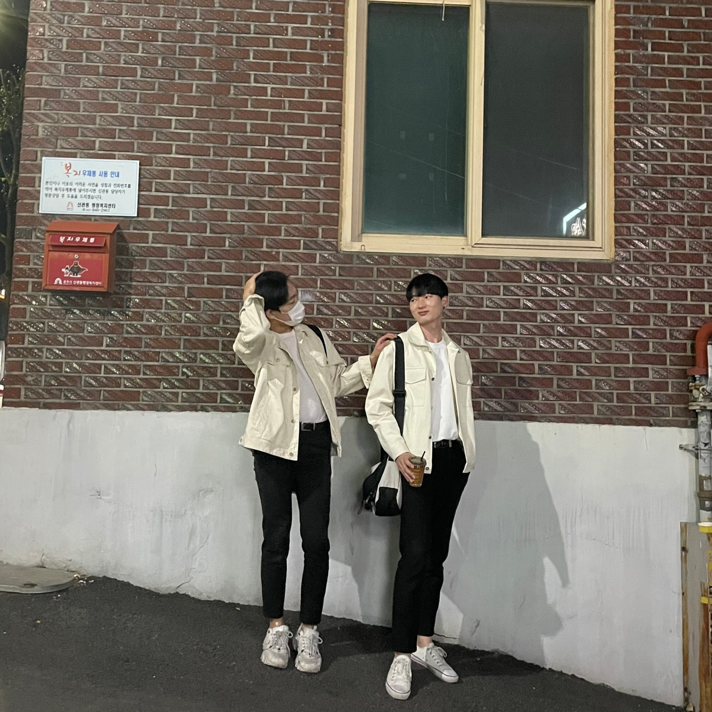
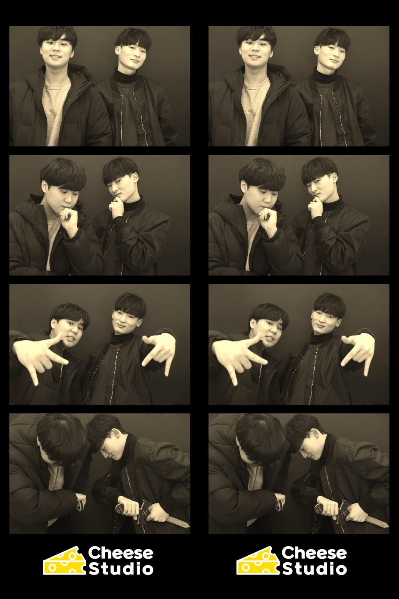
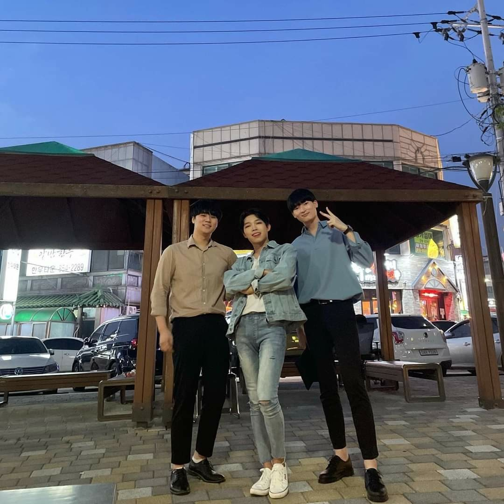
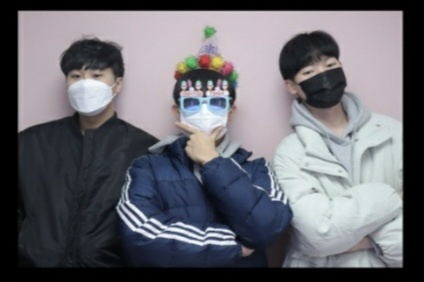
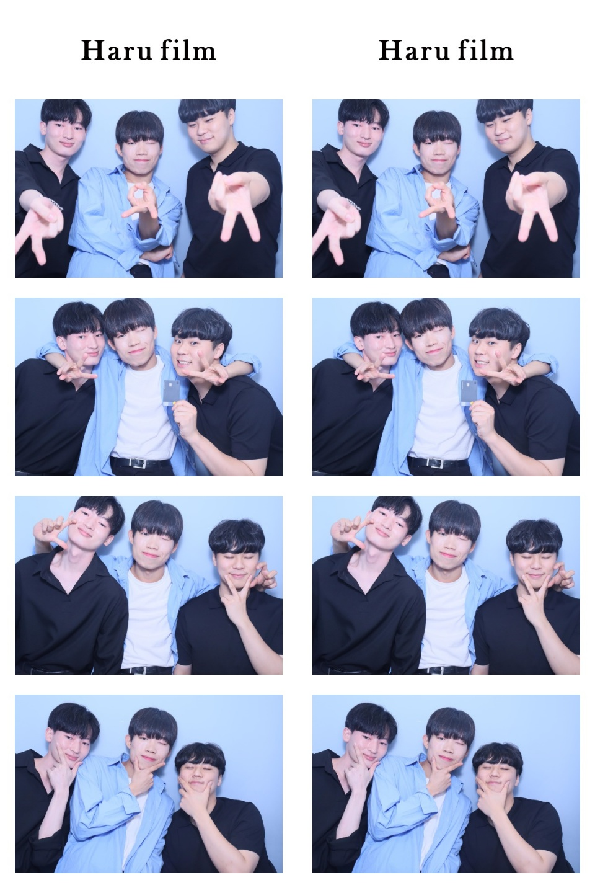

볼링(영어: bowling, 문화어: 보링)은 공을 굴려 핀이나 다른 목표물을 쓰러뜨리는 스포츠이다. 전자를 핀 볼링, 후자를 타겟 볼링이라고 한다. 일반적으로 매끄러운 나무, 혹은 합성 재질로 된 바닥에 공을 굴려 핀을 맞추는 방식이다. 야외에서 하는 경우 잔디밭에 공을 굴리기도 한다. 대표적인 핀 종류로 10핀 볼링(영어: ten-pin bowling), 9핀 볼링, 5핀 볼링, 캔들핀 볼링, 덕핀 볼링 등이 있다. 볼링화를 신고 하는데, 이는 나라마다 규격이 다르다. 88 서울 올림픽에서 시범 경기 종목으로 채택되었고, 아시안 게임의 정식 종목 중의 하나였다. 그러나 현재는 올림픽과 아시안게임의 정식 종목에서 제외되었다. 현재는 90개국 이상에서 9,500만 명 이상의 사람이 볼링을 즐긴다.
- 선수들 소개
- 윤지훈
- 황원재
- 안윤기







